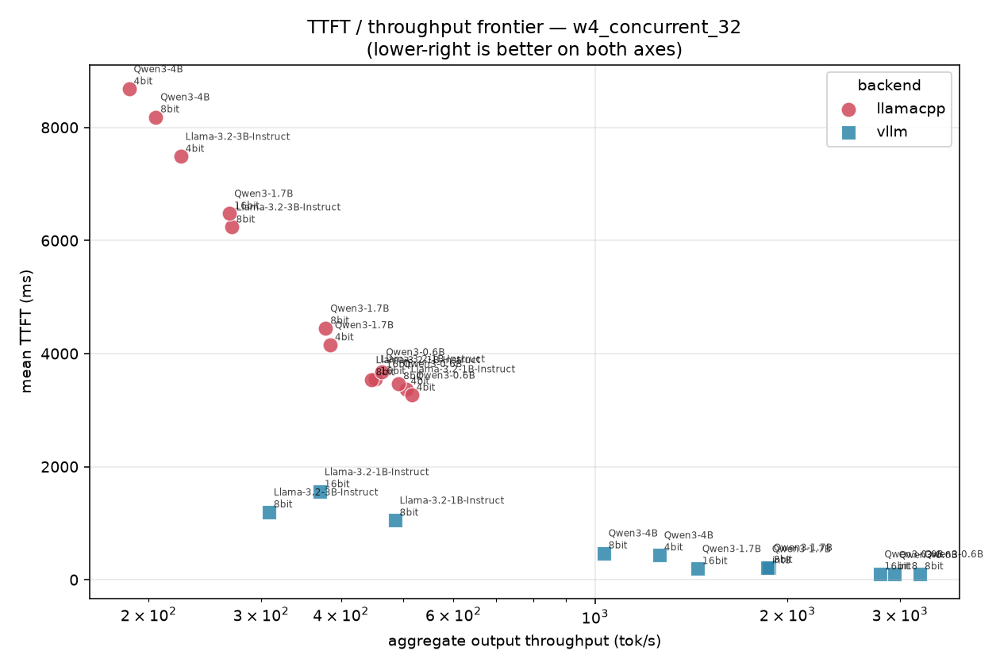
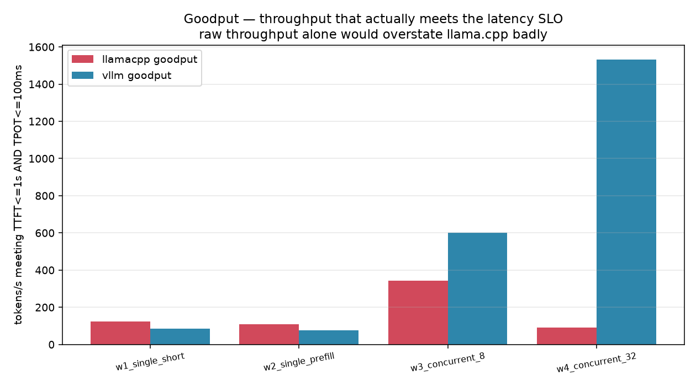
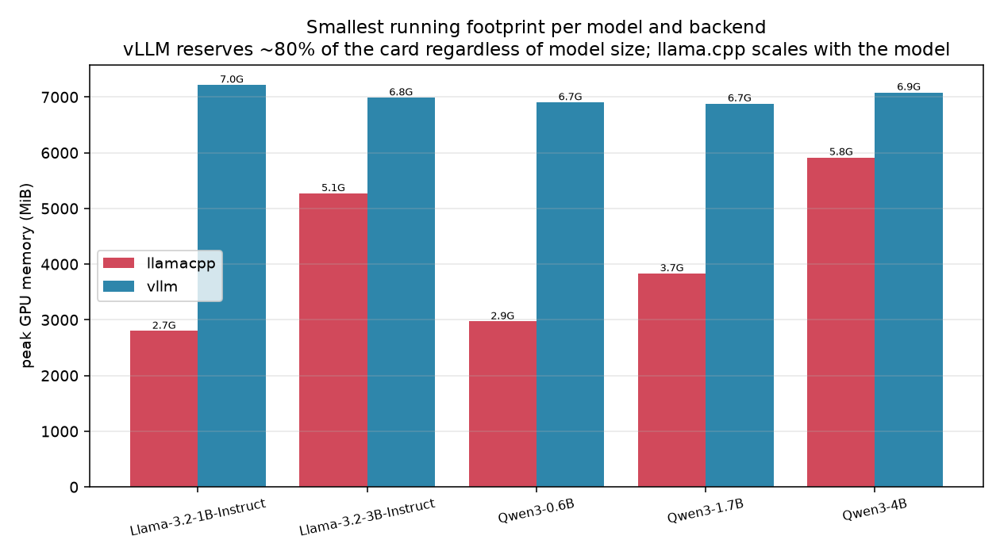
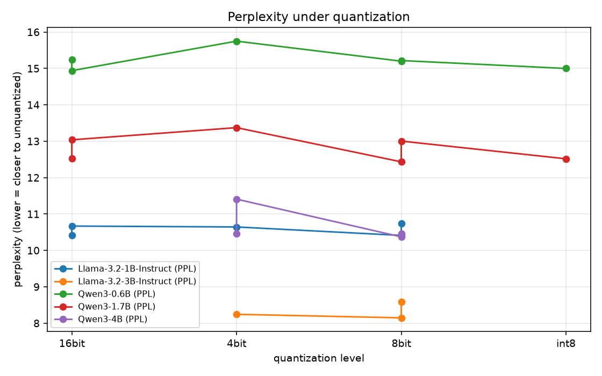

A controlled, reproducible benchmark of vLLM and llama.cpp on identical prompts across 24 backend × model × quantization configurations — measuring time-to-first-token, inter-token latency, throughput, goodput, memory, and quality. Built for an 8 GiB consumer GPU.
llama.cpp wins
4.1–20.3 ms/token vs 5.2–86.7 ms. Up to 8× faster per token. Lower memory, 4–25× faster startup.
vLLM wins, decisively
TTFT 65–135 ms vs 2,970–8,490 ms (30–60×). Throughput 1,138–3,233 vs 189–547 tok/s. Goodput 20–50× better.
llama.cpp uses less
2.8–7.6 GB scaling with model size. vLLM sits at 6.9–7.9 GB for every model, including 0.6B — ~80% preallocation.
~2–3% perplexity
8-bit is free. 4-bit costs a small, consistent amount. Penalty tracks bit width, not the backend.




| Priority | Prefer | Why |
|---|---|---|
| Interactive latency, one user, laptop/small GPU | llama.cpp | 4–20 ms/token vs 5–87 ms; 4–25× faster startup; VRAM scales with model size |
| Many concurrent users on one GPU | vLLM | 30–60× lower TTFT and 4–11× throughput; goodput 20–50× better |
| Fitting several models on one card | llama.cpp | on-demand allocation vs ~80% preallocation |
| 4-bit deployment | either | ~2–3% perplexity in both; AWQ only exists for some models on vLLM |
| 8-bit | either | free in both — within ~2% of unquantized |
| GGUF ecosystem | llama.cpp | vLLM cannot read GGUF at all |
vLLM 0.31 has no GGUF support at all, and llama.cpp has no AWQ/FP8. Their quantization surfaces are disjoint, so there is no configuration in which both serve the same weights. Every comparison above confounds backend, quantizer, and artifact — directional, not controlled.
bash scripts/run_all.sh # selftest → preflight → download → run → report python -m benchmax.cli selftest # validate the measurement core against a mock python -m benchmax.cli run --resume python -m benchmax.cli report # tables + figures